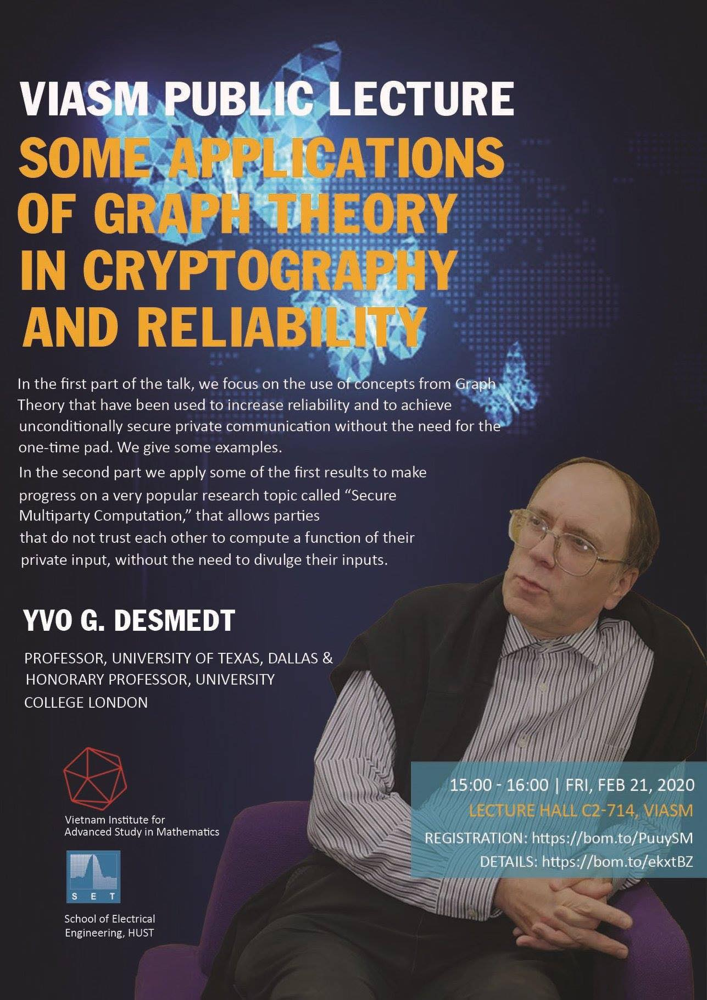

Yvo Desmedt giảng bài tại VIASM (02/2020)

Yvo Desmedt - một cây cổ thụ của làng Mật Mã sẽ giảng bài ở Hà Nội, các bạn rất nên đến tham gia.
Năm 2003 mình lần đầu tiên sang Mỹ dự hội nghị CRYPTO. Khác với EUROCRYPT được tổ chức quanh các nước châu Âu, ASIACRYPT quanh các nước châu Á – châu Úc, thì CRYPTO luôn được tổ chức tại một nơi – Santa Barbara. Nhưng chính điều đó gây cho mình một sự xúc động, bữa tiệc ngoài trời vẫn luôn trên bãi cỏ này, và nơi đây 20 năm trước, vào những năm 80 bố mình cũng đến dự CRYPTO. Mình nhớ bố kể, trong phiên Rump session hồi đó, lần đầu tiên khái niệm zero-knowledge proof (chứng minh không để lộ tri thức) đã được đưa ra (ngày nay nó là khái niệm nền tảng được ứng dụng khắp mọi nơi, ngay cả blockchain cũng phải sử dụng nó để đảm bảo an toàn tính toán và dữ liệu). Mình khi đó nghĩ, có khi đang đứng cùng chỗ với bố 20 năm trước...
Trong khi đang mơ màng với những tưởng tượng về hình ảnh xưa trong bữa tiệc ngoài vườn, mình bỗng rất ấn tượng với một ông dáng người cao cao, đội mũ phớt rộng vành, vô cùng năng động, nói oang oang với khắp mọi người. Chắc chắn 20 năm trước ông ta cũng đã là một con người đặc biệt ở đây.
Ông ta là Yvo Desmedt – một cây cổ thụ của làng Mật Mã và một người có tính cách rất sôi nổi, ngẫu hứng.
Threshold Cryptography và sự nghiệp khoa học
Cũng vào những năm đầu 80, ông là một người chủ chốt khai sinh ra Mật mã ngưỡng (Threshold Cryptography), ở đó không phải 1 phía tập trung có toàn quyền giải mã mà phải có sự đồng thuận của ít nhất một nhóm đủ lớn. Mật mã ngưỡng hiện diện khắp nơi, trong các hệ thống phân tán. Chẳng hạn ta có thể làm mạng xã hội mà ở đó tài khoản cá nhân mạng xã hội chỉ có thể bị truy cập nếu như có sự đồng thuận của cả ba phía: nhà cung cấp dịch vụ, đại diện an ninh mạng và đại diện toà án, nếu thiếu 1 trong 3 là chịu. Điều đó giúp tránh sự lạm quyền.
Ông làm nghiên cứu về rất nhiều nhánh khác nhau, rất đa dạng từ rất lý thuyết đến rất thực tế. Các lĩnh vực nghiên cứu bao rất rộng từ đưa vào các khái niệm mới, phá mã, tham gia nghiên cứu về xây dựng các hệ thống bầu cử, và cả hacking chúng, đến những lĩnh vực thực tế như e-passport, an toàn mạng, virus...
Kỷ niệm với người thầy ngẫu hứng
Mình cũng có đôi kỷ niệm với tính ngẫu hứng của Yvo Desmedt. Hồi mình đang sắp làm xong PhD, bỗng ông thầy đưa điện thoại cho mình bảo: có Yvo Desmedt gọi điện muốn nói chuyện với cậu này. Cuộc nói chuyện diễn ra chóng vánh, đại ý là Yvo Desmedt rủ mình sang làm post-doc ở University College London (UCL). Mình cũng ngẫu hứng nhận lời ký luôn trong chớp mắt. Nhóm Crypto khi đó ở UCL toàn người có tính cách đặc biệt, có Helger Lipmaa và Nicolas Courtois, tuần nào cũng đi ăn tối với nhau và càng thấy sự đặc biệt của các nhân vật này. Mình làm việc cùng Yvo, Helger và cùng viết chung hai bài báo.
Một hôm ông ta gọi mình vào phòng, đột nhiên hỏi mình có muốn sau post-doc làm lecturer tại UCL không, thì đúng lúc mình nói: tôi hôm nay cũng muốn nói chuyện với ông vì muốn xin dừng hợp đồng về lại Paris đây. Thói quen của ông ta là hay thích chủ động đánh phủ đầu với những điều bất ngờ, thì lần này mình lại làm ông bất ngờ. (Không biết ông có cuộc gặp tương tự với Helger không mà sau đó Helger về lại Estonia, và cũng không biết có cuộc gặp với chính ông không mà ông sau đó cũng quay về Mỹ.) Sau một lúc tròn mắt, tưởng bực mình thì ông ta rủ mình đi uống bia thâu đêm trong những khu phố nhộn nhịp của London, kể rất nhiều chuyện lý thú, những bí sử của ngành, và tâm sự cả cuộc sống cá nhân Âu-Mỹ của ông. Khả năng kể chuyện của ông ta là rất đặc biệt, và những bài nói chuyện cũng như vậy.
IACR Fellow và bài giảng tại VIASM
Hội mật mã thế giới IACR từ năm 2004 mỗi năm trao IACR Fellow cho tầm 5 người có đóng góp lớn cho ngành, và năm 2010 ông được trao. Ông cũng là thành viên viện hàn lâm hoàng gia khoa học Bỉ, nơi ông sinh ra.
Ông sẽ có bài giảng đại chúng tại VIASM lúc 15h ngày 21/2 tới đây, các bạn rất nên đến tham gia, chắc chắn không khí sẽ rất thú vị đấy. Link đăng ký: https://bom.to/PuuySM